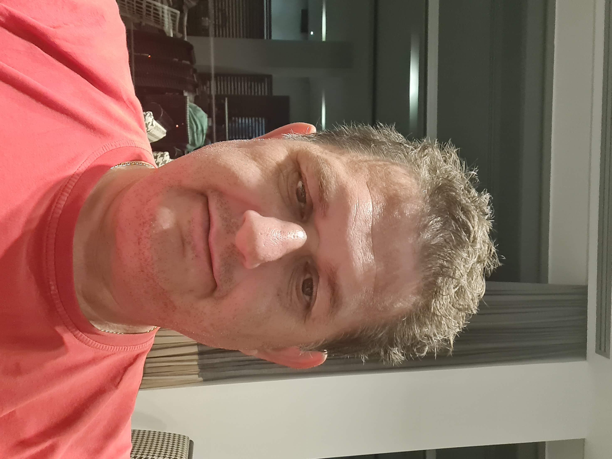
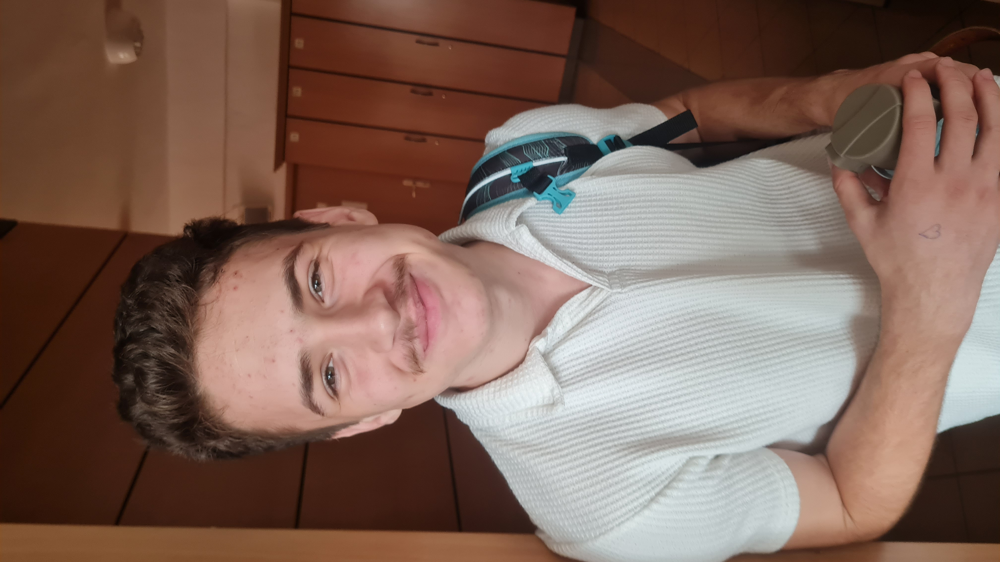
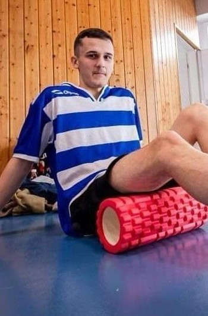
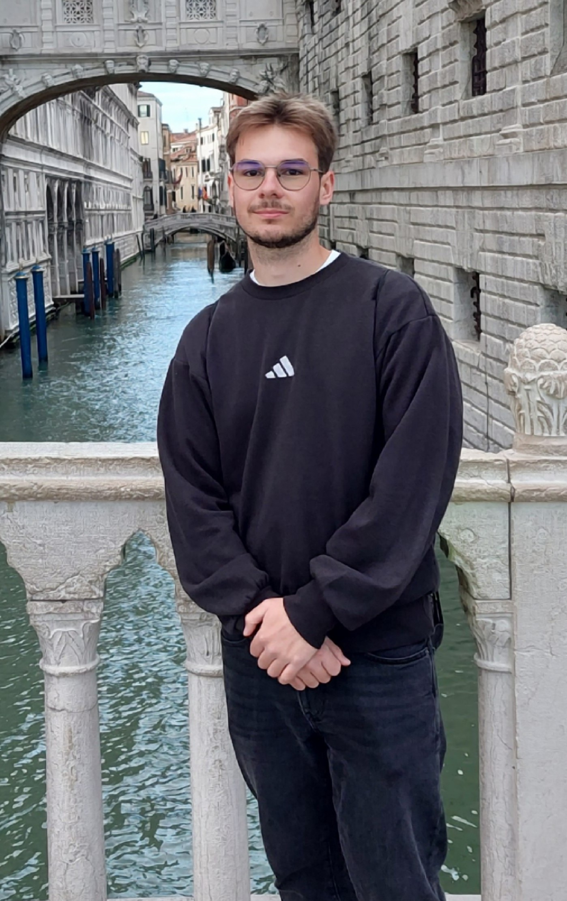

Kaposvári SZC Nagyatádi Ady Endre Technikum és Gimnázium
Teccikérteni
Bemutatkozás
Felkészítő tanár:
Papp Péter
12/B osztály tanulója:
Takács Bence
13/C osztály tanulója:
Konyhási Máté
Holczer Mátyás



